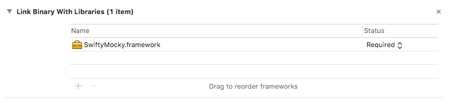
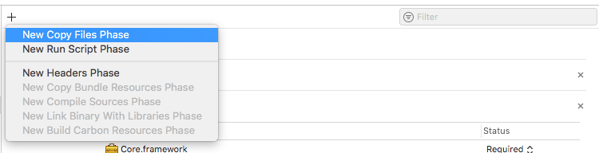
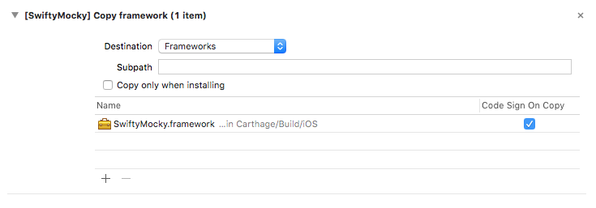

View on GitHub
View on GitHub Installation Reference
Installation Reference
Installation
SwiftyMocky is available through:
1. CocoaPods.
To install it, simply add the following line to your Podfile:
pod "SwiftyMocky"
Then execute pod install
The integration part is described in setup page.
2. Carthage.
To install, add following to you Cartfile:
github "MakeAWishFoundation/SwiftyMocky"
Then execute carthage update
For Carthage, few additional steps are required:
- Obtain Sourcery - used to generate mocks (specify valid path in generate mock) - you can use get_sourcery script below
- Change templates path to
Carthage/Build/iOS/SwiftyMocky.framework/ - In your test target add to:
- Other Swift Flags:
-DMocky
- Other Swift Flags:
In your test target, add SwiftyMocky to linked libraries:

In your test target, add new copy files phase:

Select destination to frameworks, and add SwiftyMocky:

The integration part is described in setup page.
3. Manually.
Include Sources in your project, and setup Sourcery
The integration part is described in setup page.
Important!!!
Main difference between how SwiftyMocky is installed, is location of sourcery binary and templates, used to generate Mocks. Whatever you choose, make sure that correct paths are setup for mocky.yml, and sourcery call.
Support for other swift versions
Download/build Sourcery binary manually, or use prebuilt sourcery versions from: https://github.com/MakeAWishFoundation/SwiftyMocky.wiki.git
Currentyly we support:
- 5.0
- 4.2
- 4.1
- 4.0.2
- 4.0
Usage from root project dir:
sh get_sourcery.sh # Will download 5.0 by default
sh get_sourcery.sh 5.0 # or 4.2, if you use Xcode 10.1
get_sourcery.sh
[[ $# > 0 ]] && VERSION="$1" || VERSION="5.0"
[[ $# > 1 ]] && OUTPUT="$2" || OUTPUT="./Pods/Sourcery/bin"
SOURCERY_VERSION="0.16.0" # The version of Sourcery that is associated with this SwiftyMocky version
echo "CLONE SOURCERY $SOURCERY_VERSION FOR Swift $VERSION INTO $OUTPUT"
rm -r -f "$OUTPUT"
git clone -b "sourcery/$SOURCERY_VERSION-swift$VERSION" --single-branch --depth 1 https://github.com/MakeAWishFoundation/SwiftyMocky.wiki.git "$OUTPUT"
Note! This script is also shipped with SwiftyMocky when installing via cocoapods You can use it from project root like
sh ./Pods/SwiftyMocky/get_sourcery.sh 4.2Version is optional, if you don’t specify it, script will use latest supported (5.0 in that case)Note 2! If you use Carthage, you should specify your custom output location for sourcery binary. Please have in mind, that script clears output dir, so don’t point it to
~/or something ;)